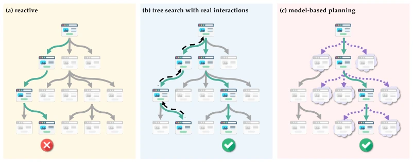
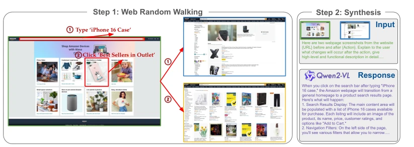
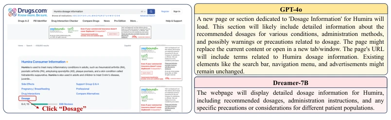
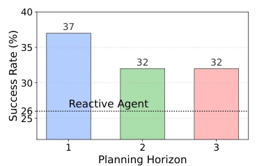

Is Your LLM Secretly a World Model of the Internet? Model-Based Planning for Web Agents
Yu Gu, Boyuan Zheng, Boyu Gou, Kai Zhang, Cheng Chang, Sanjari Srivastava abspdf
论文点评Review
这篇论文标题起得挺妙，“秘密世界模型”听着像玄学，其实是在挖掘 LLM 的隐式知识。作者精准抓住了 Web Agent 的痛点：真实网页存在大量不可逆操作，导致依赖回溯的传统 Tree Search 在沙盒外基本废了。WEBDREAMER 用 LLM 做模拟器，虽然听起来像是“用魔法打败魔法”，但效率提升确实实在。不过，Dreamer-7B 在 Reddit 这种密集文本页表现一般，说明世界模型对视觉密集场景的泛化还有坑。总的来说，这是一次把“规划”从“试错”变成“脑补”的务实尝试，虽然“脑补”偶尔会出错，但比真刀真枪砍效率高多了。它证明了专用世界模型在复杂 Web 环境中具备替代通用大模型进行高效规划的潜力，为后续研究奠定了坚实基础。
—
研究动机Motivation
现有 Web Agent 主要分两类：Reactive 和 Tree Search。Reactive 缺乏长远规划，容易短视 (Yao et al., 2023b)。Tree Search 虽然能规划，但依赖真实交互，在真实网页上存在不可逆操作（如下单、改隐私设置），导致回溯（backtracking）几乎不可行 (Koh et al., 2024b)。此外，Tree Search 推理延迟高，影响用户体验。因此，需要一种能模拟环境动态而不消耗真实交互的规划方法，即 Model-Based Planning。互联网环境开放且动态变化，构建有效的世界模型极具挑战，但 LLM 预训练数据中隐含了网页结构知识，这为利用 LLM 模拟 Web 环境提供了可能。
—

Figure 1: Schematic illustration of different web agent strategies as a search problem, where each node represents a webpage. (a) Reactive: The agent selects locally optimal actions without planning, often leading to suboptimal results. (b) Tree search with real interactions: The agent explores multiple paths via active website navigation, potentially allowing backtracking (dashed arrows). However, backtracking is often infeasible due to irreversible actions. (c) Model-based planning: The agent simulates outcomes (cloud-bordered nodes) before execution, reducing real interactions while maintaining effectiveness.
Figure 2: Illustration of WEBDREAMER simulating outcomes for three candidate actions using GPT-4o: (1) Click "Office Products", (2) Click "Electronics", and (3) Type "Disk" into textbox. Each dotted box shows an LLM-generated state after a proposed action. Simulated trajectories are scored to identify the best action, and the optimal action Click "Electronics" with the highest score (v = 0.8) is executed. This example shows a two-step planning horizon. In practice, WEBDREAMER simulates multiple trajectories per action to capture a wider range of possible outcomes, improving coverage and leading to better-informed decisions. Here we only show one trajectory for each action and the final score for brevity.

Figure 3: Data synthesis pipeline. The pipeline consists of (1) Web Random Walking, where we autonomously interact with web pages through actions like typing for search and clicking, and (2) Synthesis, where Qwen2-VL-72B (Wang et al., 2024) generates textual descriptions of state changes based on visual snapshots before and after actions.
Figure 6: Performance of WEBDREAMER with Dreamer-7B w.r.t. different sizes of training data on two online benchmarks.

Figure 7: An example comparing GPT-4o and Dreamer-7B as world models. General- purpose models such as GPT-4o often provide detailed but sometimes noisy predictions, while our Dreamer-7B focuses on concise, action-relevant outcomes.
其他图片Other Figures

Figure 5: Performance of WEBDREAMER with GPT-4o and different planning hori- zons H on Online-Mind2Web.